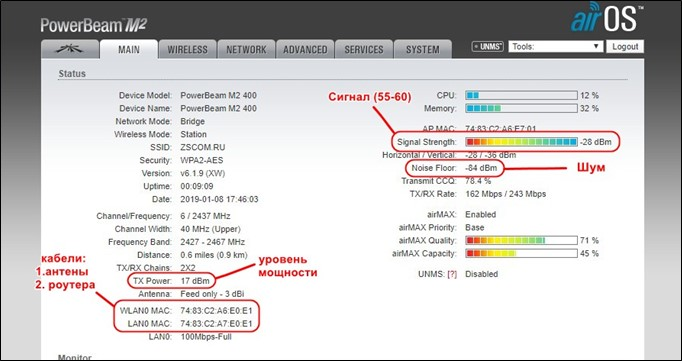
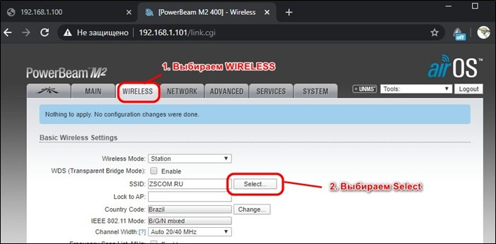
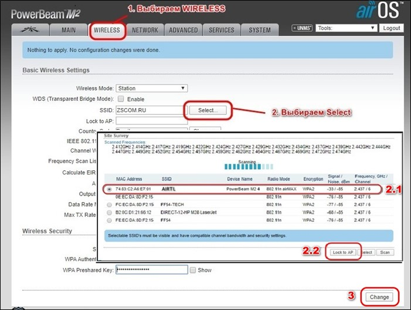
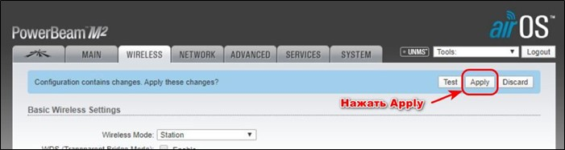
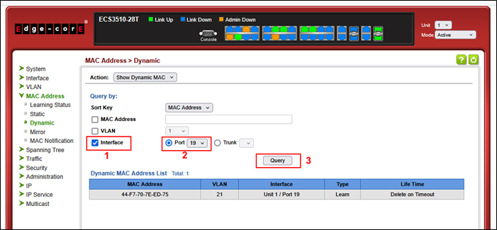
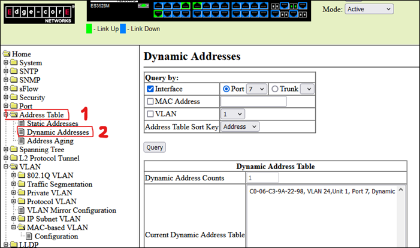

О нас
Добро пожаловать на наш сайт! Мы создаем красивые и функциональные веб-решения для вашего бизнеса. Наша команда — это профессионалы с большим опытом.
Проверка PON
При отсутствии интернета необходимо проверить GPON терминал (ONT), а также проверить схему подключения роутера к ONT
Необходимо убедиться в следующем:
• Перезагрузить оборудование. Отключить от сети 220В блок питания антенны и блок питания роутера и включить обратно.
• GPON терминал (ONT) подключен к сети электропитания, кабель от GPON терминала подключен к порту WAN роутера (синий или желтый цвет).
Вид индикация на передней панели устройств.
POWER должна постоянно гореть (включен). Включить питание в сеть 220.
PON – должна гореть постоянно – линия исправна, если мигает, то проблема на линии. Попробовать (переподключить) зеленый коннектор оптического кабеля в терминале (вытащить и вставить обратно). Светодиод не горит – это означает неисправность устройства.
LOS – не должна гореть.Если горит, моргает красным светом – это означает, обрыв на линии, в отдельных случаях может быть поврежден сам терминал.
LAN светодиод моргает (локальная сеть — подключена). Если не горит, то связь с роутером отсутствует, - нужно проверить кабель от модема до роутера. А также включен ли роутер.
• Если сигнал есть, но нет интернета — просим перегрузить роутер, не помогает перезагружаем ОНУ, вытащить LAN кабель и вставить обратно. Если и так не получается отправить инженера
• Все работает, но интернет плохой — просим проверить через SpeedTest, если выдает низкую скорость — тариф предлагаем более лучший.
• Все работает есть сессия, но нет значка WI-Fi — сзади роутера есть кнопка WI-Fi, попросить нажать и удерживать сек 20 подождать и спросить работает или нет — если нет отправить инженера
Проверка WI-FI (антена)
При отсутствии интернета необходимо проверить блок питания антенны, а также проверить cхему
подключения роутера к блоку питания антенны.Необходимо убедиться в следующем:
• Проверьте включен ли блок питания антенны к сети электропитания. На блоке питания должен загореться светодиод.
• Проверить провод от антенны к блоку питания и роутеру. Необходимо сначала подключить провод, который спускается от антенны (с крыши дома и заходит во внутрь дома), к блоку питания антенны в разъем POE.
• Проверить провод от роутера к блоку питания антенны. Необходимо взять патч-корд (короткий кабель с коннекторами) и подключить его с одной стороны к разъему LAN блока питания антенны, с другой стороны к разъему WAN роутера.
Что делать, если у меня пропал интернет?
• Перезагрузить оборудование. Отключить от сети 220В блок питания антенны и блок питания роутера и включить обратно.
• Проверить правильность подключения кабелей к блоку питания антенны и Wi-Fi роутера, коннекторы должны плотно входить в разъемы до щелчка.
Проверка через ip-адрес антенны:
Логин абонента копируем ставим в сессию. Копируем ip-адрес сессии заходим через браузер на антенну, видим сигналы антенны. Если в пределах до 60 то нормально если нет, то меняем сектор. Во вкладке MAIN есть 2 графика WLAN (кабель антенны) и LAN (кабель роутера). Если сессии нет, просим включить антенну, проверить кабели.

Меняем сектор - Перейти в WIRELESS, в пункте SSID нажать кнопку SELECT.

Выбираем сектора с лучшим сигналом под названием AIRTL нажимаем на Loсk to AP, далее нажимаем на Change. Потом Apply.
 
Для перезагрузи заходим в SYSTEM и нажимаем REBOOT
• Если сигнал с антенны плохой - перенаправить на другой сектор.
• Если нет на секторе - отправить инженера.
• Когда переходим по ip-адресу антенны, смотрим есть ли роутер, если его нет, то просим вытащить LAN кабель и вставить обратно и просим вытащить блок питания роутера и вставить обратно.
• Если, нет сессии - проверить есть ли на секторе, если есть то - просим вытащить кабель POE если и так не работает просим вытащить питание роутера и вставить обратно, если и так не получается отправить инженера с причиной посмотреть на месте.
Проверка скорости Антенны – Tools > Speed test для тарелки
- 185.x.4.17
- user
- reader
Проверка МКД (FTTB)
Заходим по ip адресу комутатора в комутатор, смотрим приходит ли МАК, если да, то просим перезагрузить не получается вытащить и засунуть кабель, опять не получается отправить инженера.
Квартирный коммутатор: ZyXEL
Копируем IР-адрес в описание Lanbiiling2:
1. Пример Адреса: 172.16.24.13
2. Вставляем его в поиск гугла.
3. Водим: admin
4. Пароль 9sХv4Sm1Ue
5. Переходим в : Management > МАС Address Таble
6. Выбираем порт, он указан в учётку Биллинга.
7. Нажимаем: Search
8. Проверяем сессию в Lanbilling2
9. Если МАК приходит, значит работает. Если нет, вытащить кабель из
роутера и обратно вставить.
10. Просите абонента перезагрузить
Квартирный коммутатор: Еdgе-соге
1. Копируем IР-адрес в описание Lanbiiling2. (Пример Адреса: 172.16.24.95)
4. Водим: admin
5. Пароль 9sХv4Sm1Ue
6. Заходим в МАС Address > Dynamic > Interface > Роrt > Query
7. Выбираем порт, он указан в учетке Lanbiiling2
8. Проверяем сессию в Lanbiiling2. Сессия есть работает.
C-DATA-OLT 172.16.11.10 @PON1
1. PON подключение: используем конструктор Secure CRT
2. PBeam-M5-300 @ Kart2_S-2 Радио подключение: Используем: UMMS.
3. Проверяем есть ли сессия по ip-адресу. Копируем, вставляем в Поиск Браузера.
4. MES-3500-24 (172.16.24.11) @ port 10. FTTB- подклю. Копируем ip-адрес и вставляем в Поиск Браузера.